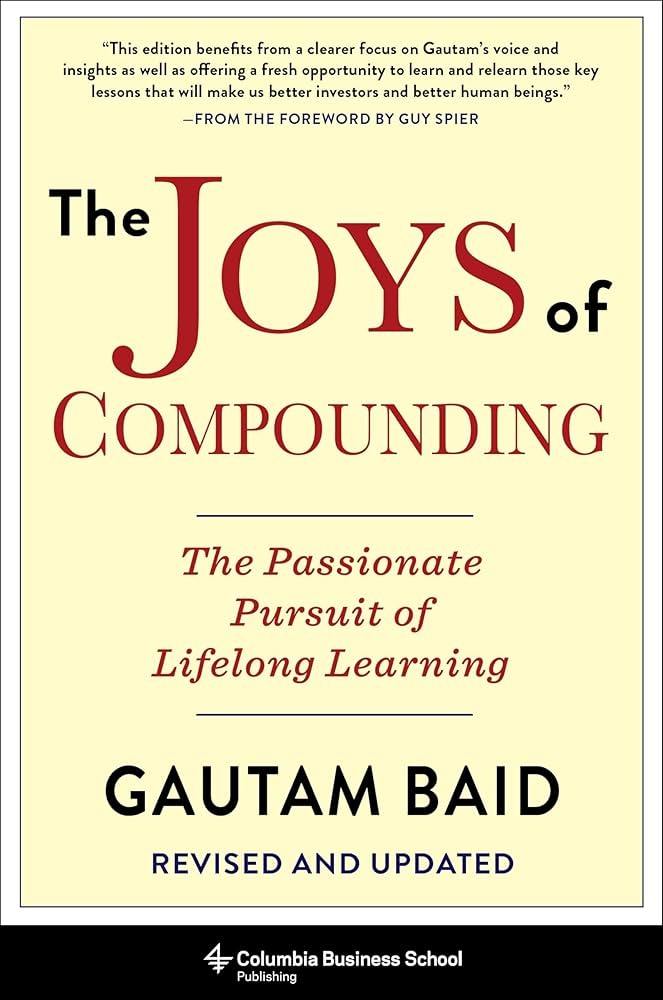

Favorite Books
Books that have shaped my thinking on business, investing, entrepreneurship, and life. Each offers timeless wisdom from builders, investors, and philosophers.

The Joys of Compounding

Atlas Shrugged

Elon Musk

Steve Jobs

Shoe Dog

Sam Walton: Made in America

Sapiens

The Tipping Point

Zero to One

The Almanac of Naval Ravikant